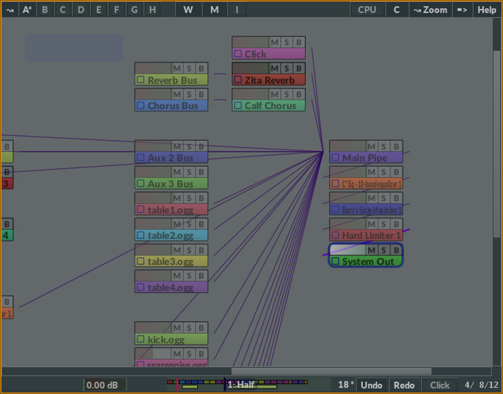
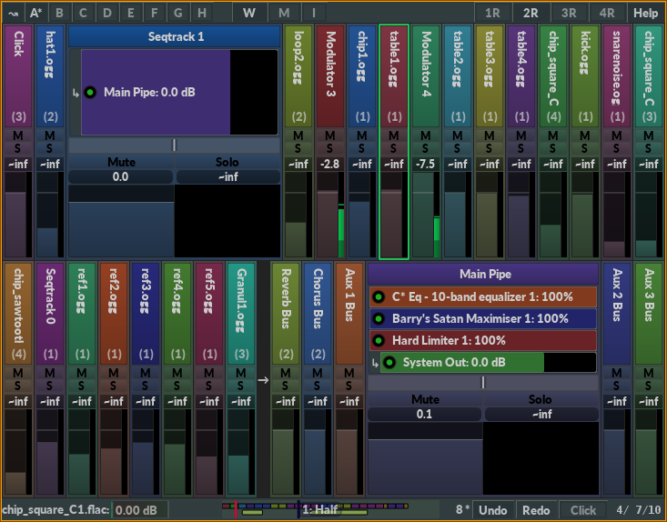

Modular Mixer
General
- Move objects with right mouse button.
- Double-click the name of an object to open GUI.
- Delete objects or connections by pressing SHIFT and click left (or right).
- Select more than one object by holding CTRL when clicking. (Use Cmd key instead of CTRL if using Mac)
- Move and connect object in one operation: Place one object on top of another object.
- Zoom in and out by pressing CTRL and using the scroll wheel.
Mixer objects
- "M": Mute
- "S": Solo
- "B": Bypass
Mixer Strips
Order
The order of the strips is not random or chronological. The sorting logic has four stages:- Sort by whether the strip is a bus or not. Non-buses are displayed first.
- Sort by vertical position in the modular mixer (top -> bottom).
- Sort by horizontal position in the modular mixer (left -> right).
- Slightly rearrange the strips order so that the audio flow always goes from left to right.
How to...
Q: Set accurate volum by writing a number?A: Click the number box right above the volume slider
Q: Reset highest peak value in the box above the audio meter?
A: Just click the box.
Q: Create a new instrument?
A: You can't do that directly in a mixer strips window. You either have to create a new instrument in the modular mixer, add a new instrument to a track in the editor, or add a new audio seqtrack.
Q: Delete a plugin or send?
A: Shift+right-click.
Q: Delete a mixer strip?
A: Right-click a mixer strip, and select "Delete". Or shift+right click the name.